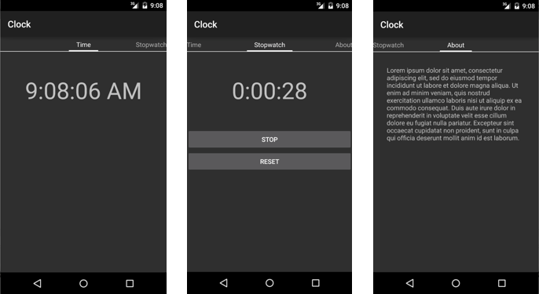

Durée
20 minutes
Objectifs
L'objectif principal de ce laboratoire est d'ajouter la navigation par onglets à une application partiellement écrite. Vous allez travailler sur une application Horloge qui fournit les trois pages suivantes: heure actuelle , chronomètre , et à propos de . Votre travail consiste à construire la structure principale de navigation. Remarquez la bande d'onglet en haut de l'interface utilisateur; c'est la chose clé que vous allez coder.
Challenge
Vous pouvez utilisez la description suivante pour réaliser l'exercice.
- Ouvrez la solution Clock.
- Dans ClockAdapter.cs, complétez l'implémentation de la classe
ClockAdapter. - Ouvrez Main.axml et remarquez que l'UI conteint un view pager.
- Ouvrez MainActivity.cs. Dans la méthode
OnCreate, utilisezFindViewByIdpour obtenir une référence auViewPager. - Créez une instance de
ClockAdapter. - Chargez l'adapter dans la propriété
ViewPagerde l'Adapter.
Steps
Below are the step-by-step instructions to implement the exercise.
Examine the starter code
The supplied code implements the entire Clock app except for the Tab Navigation part. Before you begin coding, the steps here will lead you through an examination of a few key parts of the provided code.
- Open the Clock solution from the Lab.Start folder.
- Open Resources/layout/Time.axml in source-code view.
-
Notice that the UI to display the current time is just a
TextView. The string it displays is updated every second from the code-behind. - Open TimeFragment.cs.
-
Note that the
TimeFragmentinherits from the support version of theFragmentbase class. The implementation uses a timer to update the UI once per second. -
The other fragments (
StopwatchFragmentandAboutFragment) are similar. If you have extra time, feel free to examine them; however, there is nothing there that you need to know to continue with the exercise. -
Notice that the Android Support Library v4 component has been added to the project.
This contains the
ViewPager,PagerTabStrip,Fragment, andFragmentPagerAdapterclasses that you will need to implement Tab Navigation. It also contains theFragmentActivityclass used as the base Activity type so you inherit the support version ofFragmentManager. - Open Resources/layout/Main.axml in source-code view.
-
Notice the
ViewPagerused as the root layout. It has only one child: aPagerTabStripthat displays the tabs across the top of the page.
Instantiate the adapter
The view-pager pattern requires that you implement an adapter to provide Fragments to the
ViewPager and tab titles to the PagerTabStrip. Coding the adapter is part
of this lab exercise; however, you will first write the code in MainActivity that
instantiates the adapter object and loads it into the view-pager. Seeing how the adapter is used
should help you later when you need to implement it.
- Open Resources/layout/Main.axml in source-code view.
-
Note the
idused on theViewPager. - Open MainActivity.cs.
-
Use
FindViewByIdto get a reference to theViewPager. -
Notice that
MainActivityusesFragmentActivityas its base class. This is so it will inherit aSupportFragmentManagerproperty that returns the support-library version of theFragmentManagerclass. This is needed because theViewPagerrequires that we give it an instance of the support fragment manager. -
Look at the
ClockAdapterconstructor (see below). It needs three arguments: the first is the supportFragmentManagerthat you can get fromMainActivity'sSupportFragmentManagerproperty. The other two are the collections of fragments and strings that will make up your UI.public ClockAdapter(Android.Support.V4.App.FragmentManager fm, Android.Support.V4.App.Fragment[] fragments, ICharSequence[] titles) { // ... } -
Instantiate a
ClockAdapterobject. You will need to pass in the value from your base'sSupportFragmentManagerproperty as well as the collections of fragments and titles. The completed code is given below if you need it, hidden behind a button. -
Assign your adapter instance to the
ViewPager'sAdapterproperty.
Code the adapter
The last step is to implement the pager-adapter.
- Open ClockAdapter.cs.
- Add fields to store the fragment collection and the title collection. Modify the constructor to assign the corresponding parameters to your new fields.
-
Implement the
Countproperty. This should return the number of pages you need theViewPagerto display. -
Implement the
GetItemmethod. It must return the fragment at the given position. -
Implement the
GetPageTitleFormattedmethod. It must return the title for the tab at the given position. - Run the app to test your work. Try switching tabs both by tapping the titles and by swiping.
Résumé
Dans cet exercice, vous avez utilisé la bibliothèque de support pour coder la navigation par onglet. Les deux classes clés étaient
ViewPager et PagerTabStrip . Le ViewPager a fait la plus grande partie du travail
car il a géré les transactions Fragment, gérer le geste de balayage, et implémenté les
transitions de page animées. PagerTabStrip vous a donné des onglets qui permettent à l'utilisateur de basculer
vers n'importe quelle page dont on a besoin.